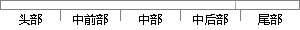

）均值滤波法。均值滤波 同样 是 采用N*N 的
片段位置图

相似结果
相似片段：
糊，不宜用于点、线、类等对细节要求较高的图像，且对高斯噪声的抑制效果也不理想。综上中值滤波法适用于消除图像中的随机噪声点和椒盐噪声。 均值滤波法[73] 均值滤波是典型的线性滤波算法，它是指在图像上对预处理的像素给一个模板，该模板包括了其周围的临近像素。将模板中的全体像素的均值来代替原来的像素值的方
| 对比库： | WriteCheck云资源库 |
| 来源： | www.yangsky.com 查看来源 |
| 发布时间： | 2014-01-18 |
| 相似率 | 66.67% （轻度抄袭） |